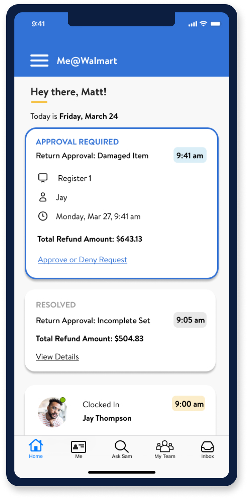
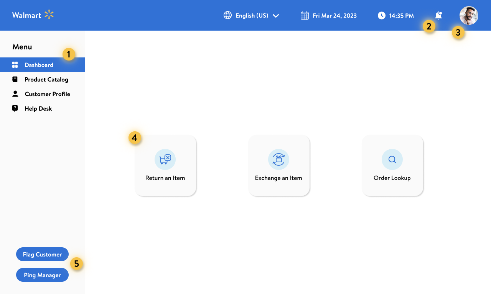
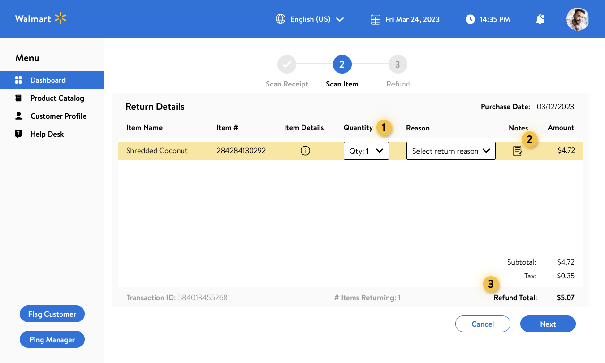

Designing an intuitive interface that empowers and supports Walmart customer
care associates.
why this project?
Walmart is a multinational retail corporation known for their wide range of
affordable products. As one of the world's largest retailers, Walmart experiences some of the
highest rates of customer service requests in the industry. After speaking with the Walmart team
about their experience with their current customer care system, we felt that there was opportunity
for improvements that would positively impact the day-to-day work experience for their employees.
High-fidelity mockup of the employee dashboard, once
logged in.
Desktop (Touch Interface)
We designed the employee dashboard to be intuitive, accessible through touch
screen, and aligned with current Walmart design guidelines. Within this dashboard, associates have
access to any actions or information needed to be successful in their roles. Some key features of
this redesign include large, accessible action buttons, access to the company-wide knowledge base
and product catalog, a customer information database, and the ability to quickly and discreetly flag
customers and call managers.
...
...
...
what was the problem?
Though robust, Walmart's customer care system can be slow and inefficient and
does
not offer features customer care associates need to appropriately solve or flag requests.
...
...
...

Hi-fidelity mockup of the mobile manager dashboard.
Mobile
To expedite the return approval process, we designed a series of mobile
screens that represent the manager notification part of the user flow. If a return exceeds the
$500 limit, all managers, assistant managers, and relevant department heads are notified and can
easily approve or deny from their mobile device. This allows managers to quick-approve
transactions without visiting the customer service counter unless needed.
...
...
...
our proposed solution
We believe an intuitive customer care system will enable customer care
associates
to quickly validate users and provide effective solutions, resulting in high user satisfaction,
customer retention, and an increase in overall financial profit.
...
...
...

High-fidelity mockup of the employee
dashboard, once
logged in.
Design Rationale: Dashboard
1Side Navigation This
side
navigation panel was designed to be accessible
through touch screen. Associates can navigate between the dashboard, search for products in the
product catalog, see details of customer profiles, and access the company-wide knowledge base
through the help desk.
2Notifications Notifications were added to
the toolbar. This is where associates can
check their “news feed” for store updates and alerts.
3Profile Icon The
profile icon displays which associated is logged in. This will limit confusion when associates clock
out and trade machines with teammates.
4Hot Key Design These
hot keys were designed to be large and easily accessible, as these are some of the most touched keys
on the associate screens. We chose dark blue to create contrast and improve overall usability.
5Frequently Used Buttons These
easily accessible buttons were included for associates to flag customers or ping managers. Based on
our research, we found that associates wanted a way to quickly flag customers for inappropriate
behavior or suspicious activity in an indiscreet way.
...
...

Hi-fidelity mockup of the return details
page.
Design Rationale: Return Details
1Adjust Quantity Associates can
adjust the quantity if users purchased more than one, and can adjust to zero to remove from the
list.
2Notes Section Through our
research, many users said they wanted a place to make notes about a return transaction. When
clicked, a modal will pop up with an option to include information. The note will then be saved in
the customer profile under this transaction.
3Scanned Items The
total refund
amount is indicated at the bottom right corner, based on the items scanned in. This gives associates
the opportunity to share how much customers will be getting back through their return.
...
...
Hi-fidelity mockup of the refund details
page.
Design Rationale: Refund Details
1Step-by-Step Process A progress bar on
interface shows the user the length of the process and provides reminders of needed actions.
2Payment Options The options available for
payment refund are determined by how the customer originally paid. The methods that are unavailable
in a specific transaction will be inactive buttons to limit user error and confusion. The methods
listed here align with Walmart's current offerings.
3Total Refund Amount Total refund amount is
restated on this screen so associates can communicate the refund amount to customers.
4Payment Information The customer's payment
information will populate here so associates can ask if they'd like it back through the same payment
method or card on file. This information also dictates what refund options appear in the box at
right
...
...
Hi-fidelity mockup of the mobile manager
screen for
refund approvals.
Design Rationale: Mobile Approval for Managers
1Approval Request The reason for return is
the first thing managers see when they open a request, followed by the associate name, time, and
date for documentation purposes. They can also see the purchase condition of the item and the item
name and number, so they can confirm the return eligibility
2Refund Amount The
total refund
amount is bolded at the bottom so it's the last thing managers see as they're making their decision.
3Approve or Deny Approve and deny
buttons live at the bottom of the page for easy access. We chose to use Walmart's red and green
colors from their design system since they most notably correlated with 'yes' and 'no.' If a manger
clicks deny, they will be prompted to visit the customer service counter to explain the decision to
the customer.
...
...
...
...
what's next?
Our next step would be to run another round of usability testing on our
high-fidelity prototype and continue to iterate based on feedback.
After a final round of testing, we would refine our pitch presentation and
schedule time to meet with stakeholders.
We are excited about the potential opportunity to present our solution to the
UX team at Walmart, and are grateful to have collaborated successfully on another project as a
team.